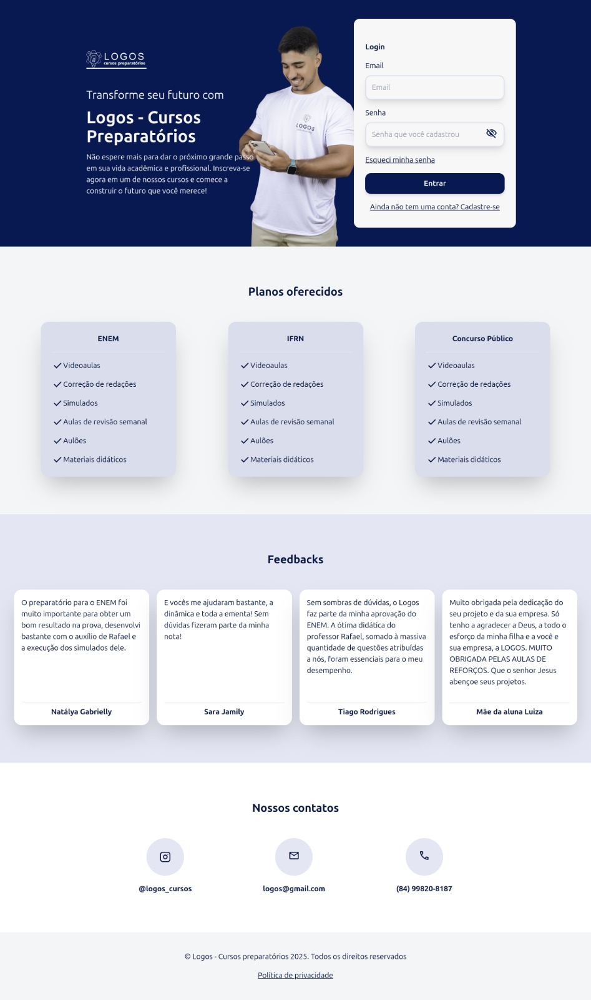

Logos Prepatórios
Descrição
O Logos Prepatórios é uma plataforma web privada desenvolvida para um curso preparatório voltado ao ENEM, IFRN e concursos públicos.
A plataforma foi criada com o objetivo de organizar e facilitar o acompanhamento de alunos, professores e conteúdos oferecidos pela instituição.
A aplicação possui dois tipos principais de usuários:
professores, que podem cadastrar cursos, aulas e atividades; e alunos, que acessam os conteúdos, assistem às aulas online e enviam tarefas para correção.
Funcionalidades
- Gestão de alunos, turmas e cursos
- Painel do professor com criação de aulas e atividades
- Upload de vídeos e materiais didáticos
- Envio e correção de tarefas
- Sistema de login por perfil (aluno ou professor)
- Acompanhamento de progresso do aluno
Tecnologias Utilizadas
- HTML
- TailwindCSS
- JavaScript
- Laravel
Interfaces do Projeto
Abaixo estão algumas imagens que ilustram as interfaces principais da plataforma:
